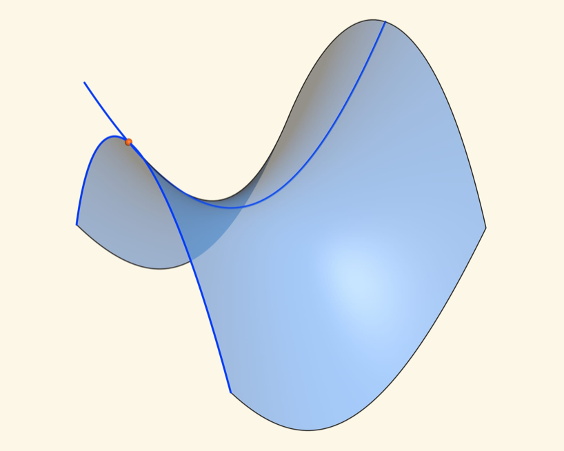

Perturbed Optimization and Duality

The Dual Problem
(Ekeland and Temam 1999) describe the concept of perturbed optimization and how it relates to duality theory. It is interesting to derive standard Lagrange and Fenchel duality from this perspective. Consider a function \(f: E \to \bar{\mathbb{R}}\) from \(E = \mathbb{R}^n\) to the extended real numbers \(\bar{\mathbb{R}} = \mathbb{R}\cup \{-\infty, +\infty\}\). We are interested minimizing \(f\). We introduce a perturbation function \(\Phi: E \times F \to \bar{\mathbb{R}}\) where \(F=\mathbb{R}^m\) and such that
\[ f(x) = \Phi(x, 0) \quad \text{for all } x \in E. \]
Our purpose is to compute \(v(0)\) where the value function \(v: F \to \bar{\mathbb{R}}\) is defined as
\[ v(y) = \inf_{x \in E} \Phi(x, y) \quad \text{for all } y \in F. \]
The convex conjugate function \(\Phi^*: E^* \times F^* \to \bar{\mathbb{R}}\) is defined as
\[ \Phi^*(p, q) = \sup_{x \in E, y \in F} \; \; \left< p,x \right> + \left< q,y \right> - \Phi(x, y) \]
so that \(\Phi(x,y) + \Phi^*(p,q) \geq \left< p,x \right> + \left< q,y \right>\) for all \((x,y,p,q)\). In particular, we have
\[ \Phi(x,0) + \Phi^*(0,q) \geq 0 \]
for all \(x \in E\) and \(q \in F^*\). Since algebra directly shows that \(\Phi^*(0,q) = v^*(q)\), we have the fundamental inequality:
\[ v(0) = \inf_{x \in E} \; f(x) \; \geq \; \sup_{q \in F^*} \; -v^*(q) = v^{**}(0). \tag{1}\]
This is the so-called dual problem. Note that it does indeed depend on the perturbation function \(\Phi\) and not only on the function \(f\). If one can analyze the conjugate function \(v^*\), then one can obtain lower bounds on the infimum of \(f\). As first sight, Equation 1 may seem like a trivial result since for any function \(F\) we have that \(F(0) + F^*(0) \geq 0\) and getting hold of the conjugate function \(v^*\) does not seem to be an easy task; we will see that this is not the case. One says that strong duality holds if
\[ v(0) = v^{**}(0). \tag{2}\]
Convexity and Strong Duality
If one assumes that the objective function \(f(x)\) is convex and the perturbation function \(\Phi(x,y)\) is jointly convex in \((x,y)\), then the value function \(v\) is also convex. Indeed, the function \(y \mapsto \inf_x C(x,y)\) is convex as soon as the function \(C(x,y)\) is convex in \((x,y)\). Since a function \(g\) equals its biconjugate \(g^{**}(x)\) at a point \(x\) as soon its subdifferential \(\partial g(x)\) is nonempty, this shows that strong duality @#eq-strong-duality holds as soon as \(\partial v(0) \neq \emptyset\). Furthermore, in a finite dimensional space, a convex function is continuous and admits a subdifferential at any point within the interior of its domain. This shows that if \(0\) belongs to the interior of the domain of \(v\), then strong duality holds. Since a convex function is continuous at \(x\) if it is bounded in a neighborhood of \(x\), strong duality holds as soon as \(v\) is bounded in a neighborhood of \(0\). By definition of the value function we have that \(v(y) \leq \Phi(x,y)\). This shows that strong duality holds as soon \(v(0)\) is finite and there exists \(x_0 \in E\) such that the function \(\Phi_{x_0}: y \mapsto \Phi(x_0, y)\) is continuous at \(0\).
Fenchel Duality
Consider the case of a function to minimize of the type:
\[ \inf_x \; f(x) = G(x) + H( A x) \]
for a linear operator \(A: E \to F\) and two convex functions \(G: E \to \bar{\mathbb{R}}\) and \(H: F \to \bar{\mathbb{R}}\). One can consider the perturbation function
\[\Phi(x,y) = G(x) + H(Ax - y).\]
Algebra gives that \(\Phi^*(0,q) = G^*(A^\top q) + H^*(-q)\) so that the dual problem reads
\[ \sup_{q \in F^*} \; -G^*(A^\top q) - H^*(-q). \]
By the previous discussion, strong duality holds, for example, as soon as the primal problem is finite and there exists \(x_0\) such that \(G(x_0) < \infty\) and the function \(H\) is continuous at \(A x_0\).